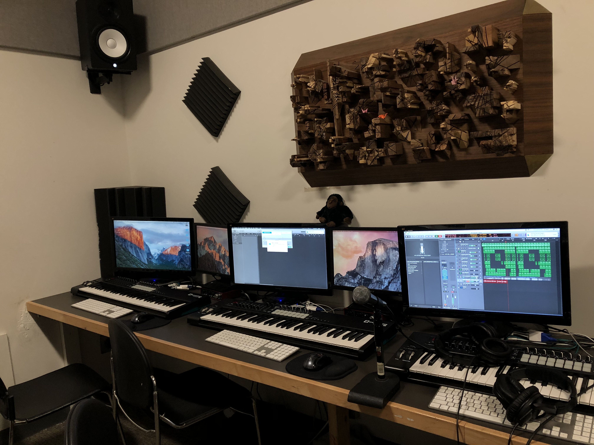

Now Playing
Estranged (2020)
Started as a freestyle during a call with friends on discord haha. This is more of 2nd version with a wacky ending.
I've been singing and writing little songs since I was young, arranging harmonies a bit too. I was in a singing department at an arts school for 6 years learning sight reading, music theory, and performance in choirs or solos before switching to studying audio production & engineering for two years. I switched due to a lack of creative liberty, wanting to learn new things/repitition in learing as I'd been there a while, and I'd made a song "Flow" and fell in love with the process.
I've written, arranged, performed, produced, recorded, edited, mixed, mastered, set up & recorded live, and replaced sound on projects in Logic Pro X & Pro Tools. I've also helped edit, mix, & record other's songs, audio books, raps, and poems, and have done many collabs. Over time I've really grown to love it and would like to put out music, hopefully soon! Here is some music I've made!